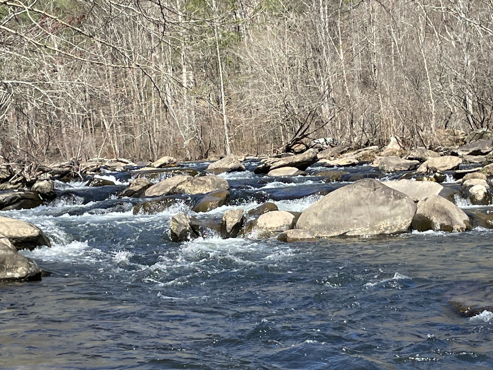

Photos
All of these I are mine shot on my iphone 12 mini.
(all of them are better on the phone I promise gmail is stopid >:( )

It is not one of my best
but I think it is good.
but I think it is good.
It is a really good view you should have been there.
(If you are curious it is the smoke mountains)
(If you are curious it is the smoke mountains)
 I am really proud of this one everything is perfect in my opinon.
I am really proud of this one everything is perfect in my opinon.
It looks better on the phone gmail is bad. >:(
I really like the reflections on the lake I think it looks cool.